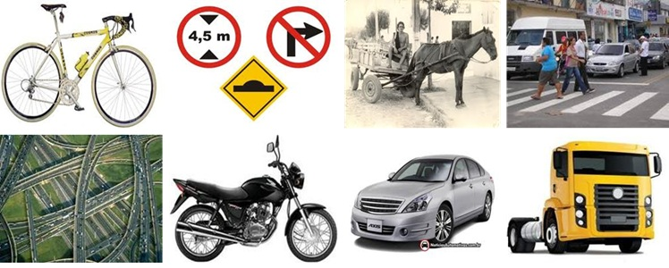
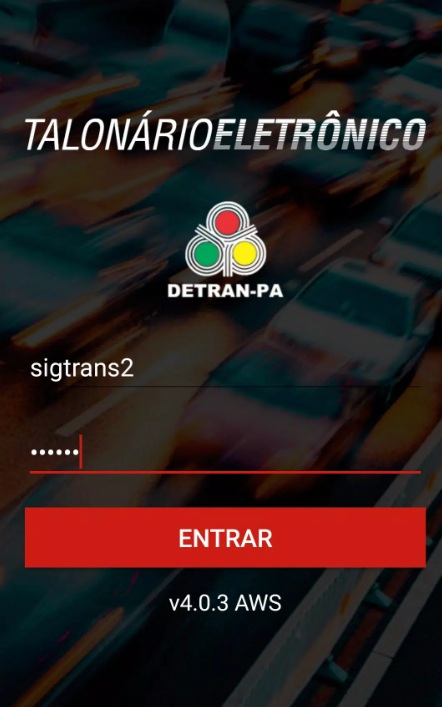
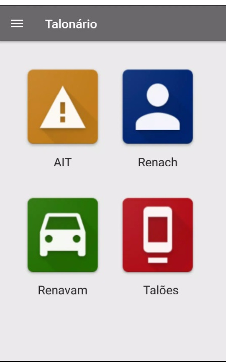
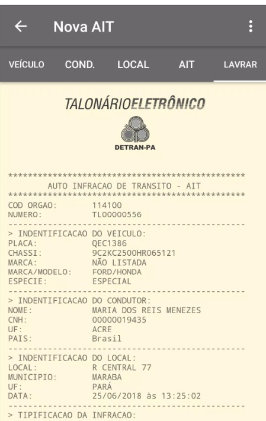
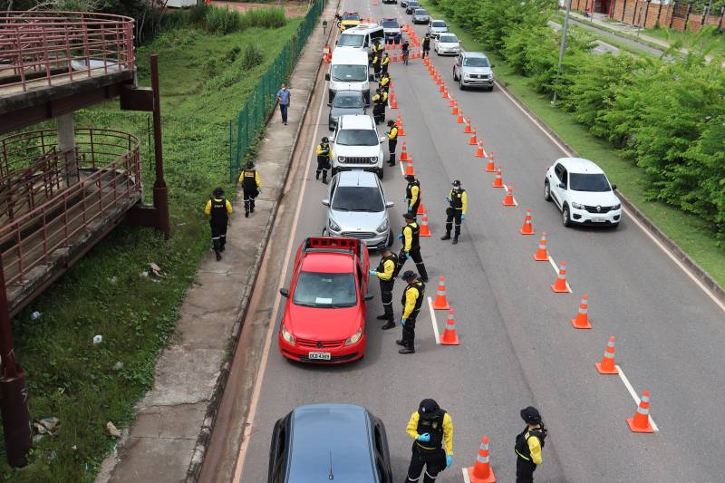
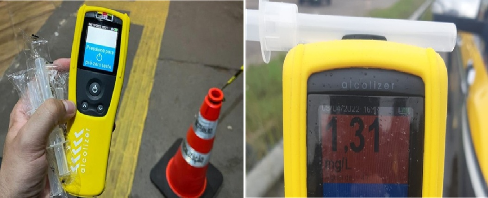
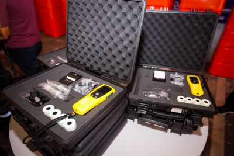

3 Conceitos e Definições
3.1 Trânsito
3.1.1 CTB - Art 1º
Considera-se trânsito a utilização das vias por pessoas, veículos e animais, isolados ou em grupos, conduzidos ou não, para fins de circulação, parada, estacionamento e operação de carga ou descarga.
|  |
3.1.2 CTB - Art 2º
O trânsito, em condições seguras, é um direito de todos e dever dos órgãos e entidades componentes do Sistema Nacional de Trânsito, a estes cabendo, no âmbito das respectivas competências, adotar as medidas destinadas a assegurar esse direito (BRASIL, 1997).
Transitar pelas vias terrestres é um direito de todo cidadão;
- O Estado tem o dever de promover que tal direito seja livre e seguro, através dos órgãos competentes;
- Tendo como prioridade, “a defesa da vida, nela incluída a preservação da saúde e do meio ambiente”. (Art. 1º, §5º do CTB).
3.1.3 CF 1998 - Art. 144, parágrafo 10º
§ 10. A segurança viária, exercida para a preservação da ordem pública e da incolumidade das pessoas e do seu patrimônio nas vias públicas:
I − compreende a educação, engenharia e fiscalização de trânsito, além de outras atividades previstas em lei, que assegurem ao cidadão o direito à mobilidade urbana eficiente; e
II − compete, no âmbito dos Estados, do Distrito Federal e dos Municípios, aos respectivos órgãos ou entidades executivos e seus agentes de trânsito, estruturados em Carreira, na forma da lei. (BRASIL, 2020, site).
3.2 Fiscalização
- Fiscalização enquanto Esforço Legal (da língua inglesa, “Enforcement”);
- Não se refere apenas às atividades de fiscalização;
- Trata-se de todo o esforço para se promover e manter um trânsito em condições seguras:
- Legislação criada e aprovada pelo Poder Legislativo;
- Sanção por parte do Executivo;
- Aplicação pelos entes públicos competentes;
- Obediência e Cumprimento pelos cidadãos;
- Fiscalização desse cumprimento pelo poder fiscalizador do Estado;
- Aplicação por parte do Poder Judiciário quando da ocorrência de crimes de trânsito.
3.2.1 Definição de Fiscalização
Ato de controlar o cumprimento das normas estabelecidas na legislação de trânsito, por meio do poder de polícia administrativa de trânsito, no âmbito de circunscrição dos órgãos e entidades executivos de trânsito e de acordo com as competências definidas neste código. (Anexo I do CTB)
3.3 O Que é o Poder de Polícia
Art. 78, § Único, do Código Tributário Nacional (Lei nº 5.172/1966)
Considera-se poder de polícia atividade da administração pública que, limitando ou disciplinando direito, interesse ou liberdade, regula a prática de ato ou abstenção de fato, em razão de interesse público concernente à segurança, à higiene, à ordem, aos costumes, à disciplina da produção e do mercado, ao exercício de atividades econômicas dependentes de concessão ou autorização do Poder Público, à tranquilidade pública ou ao respeito à propriedade e aos direitos individuais ou coletivos.
Parágrafo único. Considera-se regular o exercício do poder de polícia quando desempenhado pelo órgão competente nos limites da lei aplicável, com observância do processo legal e, tratando-se de atividade que a lei tenha como discricionária, sem abuso ou desvio de poder.
3.4 Conceitos Fundamentais CTB - Anexo I
3.4.1 Autoridade de Trânsito
Dirigente máximo de órgão ou entidade executivo integrante do Sistema Nacional de Trânsito ou pessoa por ele expressamente credenciada.
| Diretora Geral do DETRAN-PA |
|---|
3.4.2 Agente de Trânsito
Servidor civil efetivo de carreira do órgão ou entidade executivos de trânsito ou rodoviário, com as atribuições de educação, operação e fiscalização de trânsito e de transporte no exercício regular do poder de polícia de trânsito para promover a segurança viária nos termos da Constituição Federal. (Incluído pela Lei nº 14.229, de 2021)
3.4.3 Agente da Autoridade de Trânsito
Agente de Trânsito e Policial Rodoviário Federal que atuam na fiscalização, no controle e na operação de trânsito e no patrulhamento, competentes para a lavratura do auto de infração e para os procedimentos dele decorrentes, incluídos o Policial Militar ou os agentes referidos no art. 25-A (Policial Legislativo Federal) deste Código, quando designados pela autoridade de trânsito com circunscrição sobre a via, mediante convênio, na forma prevista neste Código.(Redação dada pela Lei nº 14.229, de 2021)
Condições para Exercer a Função de Agente:
- Credenciado;
- Uniformizado;
- No exercício das funções;
- Em Veículo caracterizado.
3.4.4 Infração de Trânsito
Inobservância a qualquer preceito da legislação de trânsito, às normas emanadas do Código de Trânsito, do Conselho Nacional de Trânsito e a regulamentação estabelecida pelo órgão ou entidade executiva do trânsito.
| Talonário (Login) | Talonário (Menu) | Talonário (AIT) |
|---|---|---|
|  |  |  |
3.4.5 Operação de Trânsito
Monitoramento técnico, baseado nos conceitos de engenharia de tráfego, das condições de fluidez, de estacionamento e de parada na via, de forma a reduzir as interferências, tais como veículos quebrados, sinistrados, estacionados irregularmente atrapalhando o trânsito, prestando socorros imediatos e informações aos pedestres e condutores.(Redação dada pela Lei nº 14.599, de 2023).
| Operação Lei Seca 2022 |
|---|
|  |
| Operação Lei Seca 2023 |
|---|
 |
3.4.6 Operação de Carga e Descarga
Imobilização do veículo, pelo tempo estritamente necessário ao carregamento ou descarregamento de animais ou carga, na forma disciplinada pelo órgão ou entidade executivo de trânsito competente com circunscrição sobre a via.
3.4.7 Policiamento Ostensivo de Trânsito
Função exercida pelas Polícias Militares com o objetivo de prevenir e reprimir atos relacionados com a segurança pública e de garantir obediência às normas relativas à segurança de trânsito, assegurando a livre circulação e evitando sinistros.(Redação dada pela Lei nº 14.599, de 2023)
3.4.8 Patrulhamento Ostensivo
Função exercida pela Polícia Rodoviária Federal com o objetivo de prevenir e reprimir infrações penais no âmbito de sua competência e de garantir obediência às normas relativas à segurança de trânsito, de forma a assegurar a livre circulação e a prevenir sinistros. (Redação dada pela Lei nº 14.599, de 2023)
3.4.9 Patrulhamento Viário
Função exercida pelos Agentes de Trânsito dos órgãos e entidades executivos de trânsito e rodoviário, no âmbito de suas competências, com o objetivo de garantir a segurança viária nos termos do § 10 do art. 144 da Constituição Federal.(Incluído pela Lei nº 14.229, de 2021)
3.4.10 Circulação
Movimentação de pessoas, animais e veículos em deslocamento, conduzidos ou não, em vias publicas OU privadas abertas ao publico E DE USO COLETIVO.(Incluído pela Lei nº 14.229, de 2021)
3.4.11 ETILÔMETRO
Aparelho destinado à medição do teor alcoólico no ar alveolar. (Incluído pela Lei nº 12.760, de 2012).
| Aparelho de Etilômetro |
|---|
|  |
| Kit Completo de Etilômetro |
|---|
|  |